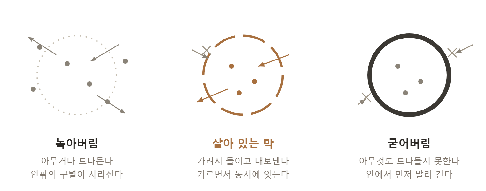

This writing is password protected.
A Cell Lives by Its Boundary
I remember the day at university when I first looked at a living cell through a microscope. At the time I assumed the cell’s “contents” — the nucleus, the organelles — would be the protagonists. But as time passed, what held my eye was something else: the thin membrane that wrapped all of it and divided inside from outside. If someone asked me now, “What is life?” I would answer this way. Life is a membrane.
This is not merely my own impression. Paul Nurse, the biologist awarded the 2001 Nobel Prize in Physiology or Medicine for uncovering how the cell cycle is regulated, names the cell itself as biology’s great first idea in his book What Is Life? What he attends to is not the exquisite parts contained inside the cell but the membrane that separates all of them from the outside world. Only when the membrane divides inside from outside and creates one distinct interior can the chemistry of life be organized rather than dispersed. For him the first condition of life was neither replication nor metabolism. It was the boundary that distinguishes the self from the world — the membrane. Life begins at a boundary.
What makes a cell a cell is neither the nucleus nor the genes. It is the membrane that divides it into inside and outside. Without a membrane there is no cell. If inside and outside are not distinguished, it is merely chemistry dissolved in water. The computational neuroscientist Karl Friston explains that every living system maintains itself through a boundary he calls a Markov blanket. Across that boundary the inside senses the outside (receiving) and acts toward it (responding). To live, in other words, is to give and receive ceaselessly at a boundary. To have no membrane is to have no boundary, and to have no boundary is to have no existence.
What this book has said from the beginning — that being is born at the boundary — biology tells us in the same words. Maturana and Varela described life as “a boundary that continually remakes itself.” And they added one thing more: a living thing and the environment surrounding it do not exist separately; they shape each other. So I am not finished before the boundary. I am made at the boundary, moment by moment, in exchange with the world. A boundary is not a wall thrown around an already completed me; it is the place where I am born.
The greatness of the cell membrane lies in its not being a simple wall. A wall blocks everything. But the cell membrane selects. Some things it admits, some it expels, some it turns away at the door. It takes in oxygen and nutrients, sends out waste, refuses what is harmful. This is called selective permeability. The membrane divides and joins at the same time. That is why it is alive.
A living boundary divides and joins at once.
I once saw this sentence as a picture. It is a print by the Dutch artist Escher in which black birds and white birds fill the frame. Fix your eye on the black birds and the black birds sharpen while the white ones recede into background. Look at the white birds and the reverse happens. Yet both are always there — because what gives the black bird its outline is the body of the white bird. Erase either one and the other vanishes with it. That is what a boundary is: not a third object laid between two worlds, but a line each draws for the other.
Within this one sentence lies the prescription for both illnesses we saw in Chapter Two. If the membrane opens completely and admits anything at all — melting away — the cell loses the distinction of inside and outside and dies. If the membrane closes completely and admits nothing — hardening over — the cell starves. A healthy cell is always in between: a membrane open yet discerning, closed yet communicating. I think of two old Hebrew words — the two callings entrusted to the human being in Genesis: avad (to serve, to till) and shamar (to keep, to preserve). Astonishingly, this is exactly what the cell membrane does. To receive and serve; to keep and preserve. Guarding the boundary is love, and fusion without boundary is not love but death.

The cell membrane teaches us what death is, too. When a cell dies, the first thing that happens is the collapse of the membrane. The boundary that divided inside from outside gives way, what was inside leaks out, and what was outside floods in. The vanishing of the boundary is death itself. What we saw in Chapter Two as a social illness — melting away — the cell knows as death in the literal sense.
This membrane is not found only in cells. Our body has boundaries layered upon boundaries, and the widest of them is the wall of the intestine. I long heard, and to my embarrassment once taught, that the intestinal epithelium spread flat would cover a tennis court. But in 2014 a Swedish research team re-measured it with precise microscopy and found thirty to forty square meters — not a tennis court but about half a badminton court. The figure carried in textbooks for decades had been inflated nearly tenfold. Still, it does not change the fact that an area the size of a studio apartment is, at this very moment, touching the outside world inside me. It is the largest front line in our body where inside meets outside. One curious fact: the tube running from mouth to anus is, topologically speaking, actually the body’s outside — an exterior running through us like the hole in a doughnut. So the intestinal wall is the membrane where I and the world touch most broadly: the vast bodily extension of the cell membrane.
And this intestinal wall works by exactly the same principle as the cell membrane — selective permeability. Between the epithelial cells, seams called tight junctions stitch the surface densely, admitting nutrients and blocking toxins and pathogens. But what happens when these seams loosen? Things that should never pass — incompletely digested fragments of protein, bacterial components — leak into the bloodstream, and the body, reacting to these intruders, lights a chronic low-grade fire of inflammation. This is the state of heightened intestinal permeability, popularly called “leaky gut.” (In popular usage it is sometimes exaggerated into the root of all illness, but barrier function and permeability themselves are firmly established physiology.)
Here this book’s thesis is realized literally, inside the body. The health of the intestinal wall is not achieved alone. It depends on a right relationship with the tens of trillions of microbes living in the gut — the “other” inside my own body. When we eat dietary fiber from vegetables and whole grains, gut bacteria ferment it and produce a short-chain fatty acid called butyrate. And butyrate is the principal food of the colonic epithelial cell. When butyrate is plentiful the epithelium is sturdy, the mucus layer thickens, the seams hold tight, and inflammation subsides. Conversely, when we eat no fiber, butyrate runs dry, and the starving bacteria gnaw instead at the mucus layer that was protecting the body, breaking the boundary down. When I feed the other (the microbes), that other guards my boundary. This relationship in which each keeps the other alive is precisely perichoresis realized in the body.
What happens when the boundary collapses is telling as well. When the intestinal wall leaks and the distinction between self and non-self blurs, the immune system falls into confusion and may end up attacking the body itself. This is autoimmune disease: the immune system, unable to tell self from other, attacking the self — narcissism at the cellular level, so to speak. What earlier chapters saw as an illness of the mind, the collapse of the boundary, appears here as an illness of immunity. Of course the opposite failure exists too. If we overuse antibiotics and live so sterilely that we eradicate the microbial other altogether, immunity never learns the other, and allergy and autoimmunity in fact increase. Erasing the boundary (fusion) is an illness; making the boundary a wall (isolation) is an illness. A healthy gut is in between — a living membrane, open yet discerning.
This principle is kept most strictly in the brain. The blood-brain barrier that guards the brain is the most selective boundary in our body. The brain is the innermost thing to be protected, so its gatekeeper is the most severe. Yet astonishingly, these boundaries are connected to one another. When the intestinal wall leaks and inflammatory substances circulate through the body, they loosen even the blood-brain barrier, and inflammation spreads into the brain, bringing depression and a foggy fatigue. This is the so-called gut-brain axis. And here appears a region of the brain I have long watched: the insula. The insula is the place that translates signals rising from the gut and viscera into “feeling,” and further into the sense of “I.” So when the body’s boundary collapses, that collapse is translated through the insula into a wavering of the self — the sense that I am a stranger to myself. Here, exactly, the body’s boundary and the mind’s selfhood meet.
Seen this way, our body is a single map of boundaries. Beginning with the innermost membrane of the mitochondrion and moving out through the cell membrane, the blood-brain barrier, the intestinal wall, the skin, and on to the boundary between my mind and another’s — all do the same work, differing only in scale: closed while open, keeping the self while exchanging with the world. And there is one prescription that revives all these boundaries at once. It is exercise. Regular exercise diversifies the gut microbiome and increases butyrate-producing bacteria, strengthening the intestinal wall; through brain-derived neurotrophic factor (BDNF) and the vagus nerve it governs the blood-brain barrier and neuroinflammation; and it restores the mitochondria. Here is why I have called exercise a medicine all my life. Exercise is an intervention that revives every level of boundary simultaneously, from the mitochondrial membrane to the boundary of the mind. So a boundary is not an abstract concept. It is the most concrete work of life, performed diligently at this very moment by tens of trillions of membranes inside my body. I am alive by boundaries. And this small membrane offers one more piece of wisdom: a living boundary does not fear a stimulus. That is the next chapter’s story.
Here I want to make one thing clear. If carrying what we saw in the cell membrane over to relationships between people were nothing more than a plausible metaphor, this book would be wordplay. But I do not think it is a metaphor. When the same pattern repeats across different levels, it does not mean that the lower level produced the upper, nor that the two merely resemble each other. Each level has properties that appear only at that level; and yet, for a living thing to maintain itself, there is one problem that must be solved at every level: to divide inside from outside while joining them at once. Cells solve it, organs solve it, persons solve it, communities solve it. That is why the same pattern appears. When this book starts at the cell and climbs to relationship, it is not riding a ladder of metaphor; it is following how one and the same problem is solved, level by level.
Notes for this chapter
Paul Nurse, What Is Life? · Karl Friston (the free energy principle) · Maturana & Varela (autopoiesis) · M. C. Escher, “Day and Night” (1938) · Genesis 2:15 (avad, shamar) · Helander & Fändriks (2014), re-measurement of the surface area of the digestive tract